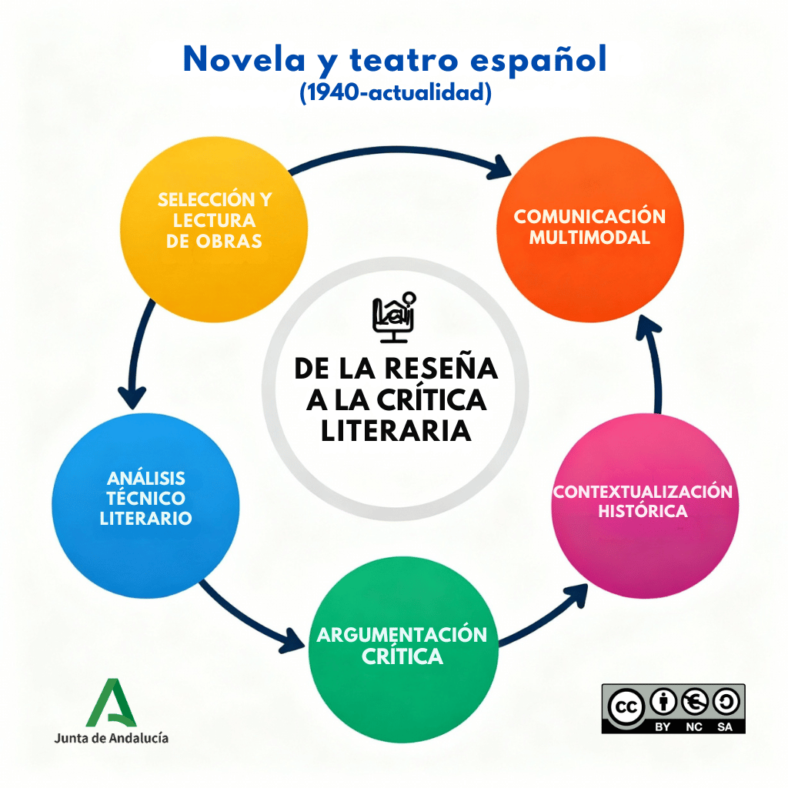

2Bac - Situación de aprendizaje 2.13: El arte de contar y decir: de la palabra al gesto: Comunicar y argumentar la experiencia literaria
1. Comenzamos
0. Introducción
En esta situación de aprendizaje, nos sumergiremos en el apasionante universo de la literatura española contemporánea, explorando tanto la novela como el teatro desde 1940 hasta la actualidad. A lo largo del curso, ya hemos descubierto formas de leer, interpretar y expresar ideas sobre textos literarios y no literarios. En esta ocasión, aplicarás esos conocimientos en un viaje dinámico, desde la experiencia personal como receptor de una obra artística hasta el análisis profundo, donde comunicarás y defenderás una interpretación de esa obra artística con creatividad y rigor.
Esta SdA se enfocará en seleccionar obras clave, compartir tu vivencia lectora de manera atractiva mediante reseñas multimodales, y luego elevar esa reflexión a un argumento académico sólido que contextualice la obra en su momento histórico. El reto que nos planteamos es una oportunidad para desarrollar competencias esenciales para la vida, que te permitirán leer y analizar obras artísticas con autonomía, expresar opiniones fundadas y participar activamente en debates culturales.
Imagen de elaboración propia creada con Perplexity (2025). Novela y teatro contemporáneo(CC BY-NC-SA)
1. Planteamos el reto
¿Alguna vez has leído una novela o has visto —o leído— una obra teatral, o una película, o una serie de televisión, y has sentido la necesidad de contárselo a alguien con entusiasmo, destacando lo que te emocionó y por qué merece ser leída o vista? ¿O has querido ir más allá, desmenuzando cómo el narrador de una novela o el conflicto dramático de una obra teatral reflejan el contexto histórico de la posguerra, de la dictadura o de la sociedad actual? En un mundo donde las redes y los medios nos inundan con opiniones superficiales, saber comunicar tu experiencia de forma viva —ya sea narrativa o dramática— y luego argumentarla con precisión es más necesario que nunca.
Tu reto en esta situación de aprendizaje será embarcarte en un doble desafío:
Primero, vas a crear una reseña informal multimodal —un texto, o un vídeo, o un pódcast — sobre una novela o una obra de teatro española desde 1940, donde compartas tu itinerario personal, tus impresiones y una recomendación o rechazo apasionado.
Segundo, transformarás esa reseña en una crítica literaria o presentación técnica que analice formalmente la obra, que la contextualice históricamente y que establezca vínculos intertextuales. A saber, desarrollarás tu interpretación con un metalenguaje específico. Piensa en la satisfacción de no solo recomendar una obra, sino de defender por qué refleja temas universales como la identidad, la represión o la libertad. Este proceso te preparará para ser un lector y receptor crítico y un comunicador efectivo, capaz de influir en conversaciones sobre literatura, arte y sociedad.
En el vídeo que aparece más abajo, se ilustra cómo una reseña informal puede provocar a los lectores y seguidores del canal en Tiktok de esta librera de Gijón:
Los mismos lectores interesados en esta novela premiada en 2025 con el Premio Planeta que han escuchado las opiniones de la librera pueden, además, leer la crítica literaria de Jordi Gracia publicada en el periódico El País. Aunque coinciden la librera y el crítico en su valoración sobre esta obra, estos fragmentos de la crítica son útiles para percibir las diferencias entre la reseña informal de la librera y una crítica o reseña literaria profesional. En ella, Jordi Gracia se refiere a la técnica narrativa, a la construcción de los personajes y a otras obras del autor, Juan del Val, antes de una conclusión demoledora sobre su valor literario (“novelita sentimental de kiosco”):
Además de soporífera, la alineación completa de enredos prefabricados y tópicos sentimentales es desdichada hasta el aburrimiento que mortifica a la buena, rica y metódica de Vera en su insípida vida (...).
El exiguo grosor de los personajes, la ausencia de una mínima caracterización creíble, el andamiaje mecánico de una trama de amores y venganzas, la crujiente banalidad de las reflexiones, la pobreza evangélica de la prosa, las páginas de relleno para contar supuestas biografías de personajes prometen un exitazo (...).
Sin que su anterior novela "Bocabesada" fuese "Madame Bovary", al menos acechaba la sombra de Grey y un cinismo mejor armado, gamberro y hasta a ratos divertido (...).
Lo verdaderamente extravagante es que en una novelita sentimental de kiosco como esta recaiga el premio que la inmensa mayoría de la población considera el más prestigioso y relevante de los privados (...).
Gracia, J. (2025, 5 de noviembre). A las pijas finas les gustan los malotes semirreformados (y pobres). El País. https://elpais.com/babelia/2025-11-05/a-las-pijas-finas-les-gustan-los-malotes-semirreformados-y-pobres.html
En esta situación, vas a transitar desde la recomendación informal de una obra hasta la defensa argumentada de una interpretación académica.
2. Estos serán tus logros
La habilidad de leer, comunicar y analizar la novela y el teatro español contemporáneo no es solo un ejercicio académico, sino una competencia clave para la vida cotidiana y profesional. Cada día, enfrentamos textos complejos en libros, artículos, representaciones teatrales, obras cinematográficas o series de televisión que provocan debates culturales, y saber conectar tu experiencia personal con un análisis riguroso te permite dar forma a opiniones sólidas argumentadas, para compartirlas de manera eficaz. Al finalizar esta situación, lograrás:
Tomar decisiones lectoras informadas. Elegir obras autónomamente —narrativas o dramáticas— y documentar tu itinerario con explicaciones argumentadas, ampliando tu horizonte cultural y personal.
Compartir experiencias de forma creativa. Utilizar soportes multimodales para recomendar lecturas de novelas o textos teatrales, elaborando interpretaciones que vinculen la obra con otras manifestaciones artísticas para el disfrute social de la literatura.
Argumentar interpretaciones con rigor. Explicar el sentido de novelas y obras teatrales mediante análisis de elementos específicos de cada género, contexto socio-histórico (posguerra, dictadura, transición, democracia) y vínculos intertextuales, para valorar su relevancia ética y estética en la tradición española.
Comunicarte de forma eficaz. Realizar exposiciones orales o escritas, formales, extensas y multimodales sobre temas de interés cultural.
Perfeccionar habilidades de competencia de escritura académica. Planificar la estructura de un ensayo, sostener una tesis con argumentos sólidos, integrar citas textuales de manera pertinente, revisar críticamente tu propio trabajo y el de vuestros compañeros, reformular para ganar precisión y claridad… forma parte de las habilidades intelectuales que necesitaréis en cualquier ámbito profesional donde el pensamiento riguroso y la comunicación efectiva sean relevantes.
Desarrollar pensamiento crítico y el trabajo cooperativo. Participar en equipos para construir conocimiento compartido sobre novela y teatro, respetando la diversidad de opiniones y rechazando usos discriminatorios del lenguaje, de tal modo que prepararás tu voz para participar en debates y contextos democráticos y culturales.
3. Conexión con la vida real
Comunicar vuestra experiencia con una novela o una obra de teatro y argumentar una interpretación técnica de esos textos son habilidades que te acompañarán toda la vida, mucho más allá de este proyecto. Todos los días estás rodeado de discursos, mensajes y narrativas —en redes sociales, películas, series, prensa, política, pódcast— que intentan convencerte, emocionarte o hacerte reflexionar. Saber reconocer cómo se construyen esos mensajes, qué estrategias utilizan para transmitir ideas y valores, y ser capaces de elaborar tus propias interpretaciones fundamentadas te convierte en comunicador efectivo y en analista crítico de la cultura que te rodea.
En esta situación de aprendizaje, desarrollarás precisamente esas competencias: aprenderás a comunicar de forma atractiva y persuasiva tu experiencia personal con una obra literaria —ya sea una novela de la posguerra o una pieza teatral de la democracia—, utilizando formatos multimodales como el vídeo o el pódcast. Pero no solo eso: también te convertirás en analista técnico capaz de desentrañar los mecanismos formales de esas obras, aplicando un metalenguaje específico para explicar cómo el narrador, la estructura, los personajes, el conflicto dramático o el espacio escénico generan significado.
Estas habilidades te permiten participar activamente en debates culturales, comprender mejor las historias que consumes y creas a diario, y comunicar tus ideas con rigor y creatividad en cualquier ámbito —académico, profesional o personal. La novela y el teatro español desde 1940 no solo reflejan momentos históricos cruciales —posguerra, dictadura, transición, democracia—, sino que también abordan preocupaciones humanas universales sobre la identidad, la libertad, la memoria y el cambio social, temas universales que siguen siendo relevantes en la actualidad.
En el siguiente vídeo, podrás ver cómo la capacidad de analizar y comunicar sobre obras artísticas influye en la vida real, cómo la importancia de construir interpretaciones fundamentadas y de expresarlas con precisión son esenciales para participar en la conversación cultural de nuestra sociedad.
Este vídeo ejemplifica un debate habitual en las conversaciones culturales: las adaptaciones a formatos audiovisuales, ¿arruinan o enriquecen las historias? En este pódcast, conversan con una booktuber sobre las adaptaciones cinematográficas de novelas. Analizan las diferentes expectativas de los espectadores: desde el lector que busca en la adaptación un reflejo o trasunto visual fiel hasta que el que entiende que el modo visual tiene sus propios códigos y ello supone un alejamiento del original. Es evidente que saber argumentar interpretaciones sobre obras artísticas en formatos accesibles y dinámicos conecta directamente con la participación activa en comunidades culturales donde se valoran novelas, teatro, películas y series.
4. Mapa conceptual

Mapa conceptual de elaboración propia creado con Perplexity (2025). Mapa conceptual(CC BY-NC-SA)